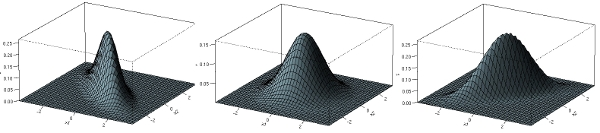
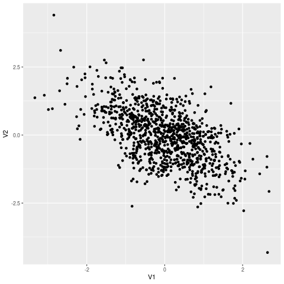
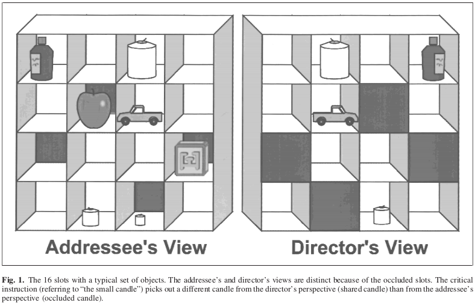
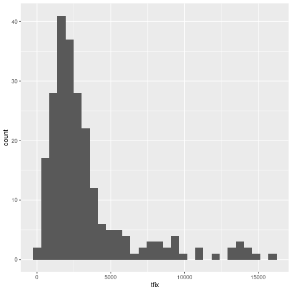

Linear mixed-effects models with crossed random factors of subjects and stimuli
Table of Contents
Script
The scripts below contain the full solutions to the problems below. Please attempt the problems before consulting them.
- (optional) download the full script for the data simulation section
- (optional) download the full script for the KBBB (2000) re-analysis
Generating multilevel data
For this first set of exercises, we will generate simulated data corresponding to an experiment with a single, two-level factor (independent variable) that is within-subjects and between-items. Let’s imagine that the experiment involves lexical decisions to a set of words (e.g., is “PINT” a word or nonword?), and the dependent variable is response time (in milliseconds), and the independent variable is word type (noun vs verb). We want to treat both subjects and words as random factors (so that we can generalize to the population of events where subjects encounter words).
The general linear model for our study is:
\(Y_{si} = \beta_0 + S_{0s} + I_{0i} + (\beta_1 + S_{1s})X_{i} + e_{si}\)
where:
| \(Y_{si}\) | Y |
RT for subject \(s\) responding to item \(i\); |
| \(\beta_0\) | mu |
grand mean; |
| \(S_{0s}\) | sri |
random intercept for subject \(s\); |
| \(I_{0i}\) | iri |
random intercept for item \(i\); |
| \(\beta_1\) | eff |
fixed effect of word type (slope); |
| \(S_{1s}\) | srs |
by-subject random slope; |
| \(X_{i}\) | x |
deviation-coded predictor variable for word type; |
| \(e_{si}\) | err |
residual error. |
- Subjects
\(<S_{0i},S_{1i}> \sim N(<0,0>, \Sigma)\), where
\(\Sigma = \left(\begin{array}{cc}{\tau_{00}}^2 & \rho\tau_{00}\tau_{11} \\ \rho\tau_{00}\tau_{11} & {\tau_{11}}^2 \\ \end{array}\right) \)

- Items
\(I_{0i} \sim N(0, \omega_{00}^2)\)
Set up the environment and define the parameters for the DGP
If you want to get the same results as everyone else for this exercise, then we all should seed the random number generator with the same value. While we’re at it, let’s load in the packages we need.
library("lme4") library("tidyverse") set.seed(11709)
Now let’s define the parameters for the DGP (data generating process).
nsubj <- 100 # number of subjects nitem <- 50 # must be an even number mu <- 800 # grand mean eff <- 80 # 80 ms difference effc <- c(-.5, .5) # deviation codes iri_sd <- 80 # by-item random intercept sd (omega_00) ## for the by-subjects variance-covariance matrix sri_sd <- 100 # by-subject random intercept sd srs_sd <- 40 # by-subject random slope sd rcor <- .2 # correlation between intercept and slope err_sd <- 200 # residual (standard deviation)
You’ll create three tables:
subjects |
table of subject data including subj_id and subject random effects |
items |
table of stimulus data including item_id and item random effect |
trials |
table of trials enumerating encounters between subjects/stimuli |
Then you will merge together the information in the three tables, and calculate the response variable according to the model formula above.
Generate a sample of stimuli
Let’s randomly generate our 50 items. Create a tibble called item like the one below, where iri are the by-item random intercepts (drawn from a normal distribution with variance \(\omega_{00}^2\) = iri_sd^2). Half of the words are of type NOUN (cond = -.5) and half of type VERB (cond = .5).
# A tibble: 50 x 3
item_id cond iri
<int> <dbl> <dbl>
1 1 -0.5 14.9
2 2 0.5 -86.3
3 3 -0.5 -12.8
4 4 0.5 -13.9
5 5 -0.5 55.6
6 6 0.5 -45.9
7 7 -0.5 -42.0
8 8 0.5 -87.6
9 9 -0.5 -97.4
10 10 0.5 -85.2
# … with 40 more rows
rep()
rnorm(nitem, ???, ????...)
items <- tibble(item_id = 1:nitem,
cond = rep(c(-.5, .5), times = nitem / 2),
iri = rnorm(nitem, 0, sd = iri_sd))
Generate a sample of subjects
To generate the by-subject random effects, you will need to generate data from a bivariate normal distribution. To do this, we will use the function MASS::mvrnorm.
WARNING: do not run library("MASS") just to get this one function, because MASS has a function select() that will overwrite the tidyverse version. Since all we want from MASS is the mvrnorm() function, we can just access it directly by the pkgname::function syntax, i.e., MASS::mvrnorm().
Here is an example of how to use MASS::mvrnorm() to randomly generate correlated data (with \(r = -.6\)) for a simple bivariate case. In this example, the variances of each of the two variables is defined as 1, such that the covariance becomes equal to the correlation between the variables.
## mx is the variance-covariance matrix mx <- matrix(c(1, -.6, -.6, 1), nrow = 2, byrow = TRUE) biv_data <- MASS::mvrnorm(1000, mu = c(0, 0), Sigma = mx) ## look at biv_data ggplot(as.tibble(biv_data), aes(V1, V2)) + geom_point()

Your subjects table should look like this:
# A tibble: 100 x 3
subj_id sri srs
<int> <dbl> <dbl>
1 1 -156. -49.6
2 2 -60.1 -7.54
3 3 -166. -16.2
4 4 -66.7 52.0
5 5 136. 33.9
6 6 -13.1 22.7
7 7 -42.7 -59.8
8 8 -124. 21.2
9 9 192. 7.19
10 10 -33.3 -68.7
11 11 142. 71.2
12 12 106. 29.3
13 13 -17.2 12.8
14 14 12.5 30.7
15 15 38.1 1.80
16 16 -140. -11.8
17 17 -73.9 -83.0
18 18 35.4 -85.6
19 19 -53.1 61.0
20 20 43.1 -8.44
21 21 138. 29.0
22 22 218. 48.8
23 23 -146. -30.1
24 24 58.7 -40.4
25 25 30.7 -9.15
26 26 -91.8 -8.32
27 27 6.93 -46.6
28 28 -26.5 72.5
29 29 215. 50.9
30 30 -16.5 2.88
31 31 62.0 31.2
32 32 2.48 -22.5
33 33 38.9 28.1
34 34 -58.0 -28.1
35 35 -57.1 74.0
36 36 -180. 6.71
37 37 46.3 -7.96
38 38 -74.9 -7.87
39 39 21.1 -29.6
40 40 -96.1 -59.2
41 41 122. -30.3
42 42 109. -27.6
43 43 -81.2 -20.1
44 44 -3.99 -14.3
45 45 48.7 8.77
46 46 -82.7 -2.90
47 47 -106. 38.6
48 48 150. -0.445
49 49 167. -28.0
50 50 -82.9 -8.71
51 51 13.8 10.8
52 52 -19.7 34.7
53 53 45.2 -16.2
54 54 75.4 -2.60
55 55 -90.0 -26.6
56 56 -37.5 11.2
57 57 93.3 -37.5
58 58 25.2 11.0
59 59 10.0 19.9
60 60 34.4 -1.13
61 61 56.6 -9.50
62 62 -14.2 -21.8
63 63 23.2 8.11
64 64 -34.2 7.19
65 65 82.3 23.8
66 66 52.3 -11.3
67 67 -87.6 -30.4
68 68 50.2 -67.5
69 69 -185. 69.3
70 70 -101. -52.2
71 71 -48.9 70.9
72 72 18.8 12.4
73 73 -78.4 -27.0
74 74 -106. 34.4
75 75 -174. 0.376
76 76 137. 65.2
77 77 -132. -6.56
78 78 -80.0 -74.4
79 79 61.3 30.3
80 80 18.1 26.4
81 81 188. -31.0
82 82 -38.3 -129.
83 83 -7.84 -16.6
84 84 57.8 -0.744
85 85 93.3 7.13
86 86 150. -7.91
87 87 -141. -2.64
88 88 71.4 -10.8
89 89 -64.5 -2.47
90 90 133. -57.6
91 91 74.1 7.29
92 92 -23.3 55.0
93 93 84.1 77.6
94 94 61.8 11.1
95 95 -87.3 -34.8
96 96 0.0734 79.7
97 97 215. 59.8
98 98 47.8 26.2
99 99 134. 40.4
100 100 56.7 -15.3
recall that:
sri_sd : by-subject random intercept standard deviation
srs_sd : by-subject random slope standard deviation
r : correlation between intercept and slope
covariance = r * sri_sd * srs_sd
matrix( sri_sd^2, r * sri_sd * srs_sd,
r * sri_sd * srs_sd, srs_sd^2)
as.tibble(mx)
mx <- matrix(c(sri_sd^2, rcor * sri_sd * srs_sd, rcor * sri_sd * srs_sd, srs_sd^2), nrow = 2, byrow = TRUE) # look at it by_subj_rfx <- MASS::mvrnorm(nsubj, mu = c(sri = 0, srs = 0), Sigma = mx) subjects <- as.tibble(by_subj_rfx) %>% mutate(subj_id = row_number()) %>% select(subj_id, everything())
Generate a sample of encounters (trials)
Each trial is an encounter between a particular subject and stimulus. In this experiment, each subject will see each stimulus. Generate a table trials that lists the encounters in the experiments. Note: each participant encounters each stimulus item once. Use the crossing() function to create all possible encounters.
Now apply this example to generate the table below, where err is the residual term, drawn from \(N \sim \left(0, \sigma^2\right)\), where \(\sigma\) is err_sd.
# A tibble: 5,000 x 3
subj_id item_id err
<int> <int> <dbl>
1 1 1 -134.
2 1 2 -127.
3 1 3 142.
4 1 4 -335.
5 1 5 120.
6 1 6 -9.00
7 1 7 44.7
8 1 8 48.4
9 1 9 -63.7
10 1 10 -304.
# … with 4,990 more rows
trials <- crossing(subj_id = subjects %>% pull(subj_id), item_id = items %>% pull(item_id)) %>% mutate(err = rnorm(nrow(subjects) * nrow(items), mean = 0, sd = err_sd))
Join subjects, items, and trials
Merge the information in subjects, items, and trials to create the full dataset dat, which looks like this:
# A tibble: 5,000 x 7
subj_id item_id sri iri srs cond err
<int> <int> <dbl> <dbl> <dbl> <dbl> <dbl>
1 1 1 -156. 14.9 -49.6 -0.5 -134.
2 1 2 -156. -86.3 -49.6 0.5 -127.
3 1 3 -156. -12.8 -49.6 -0.5 142.
4 1 4 -156. -13.9 -49.6 0.5 -335.
5 1 5 -156. 55.6 -49.6 -0.5 120.
6 1 6 -156. -45.9 -49.6 0.5 -9.00
7 1 7 -156. -42.0 -49.6 -0.5 44.7
8 1 8 -156. -87.6 -49.6 0.5 48.4
9 1 9 -156. -97.4 -49.6 -0.5 -63.7
10 1 10 -156. -85.2 -49.6 0.5 -304.
# … with 4,990 more rows
Note: this is the full decomposition matrix for this model.
dat_sim <- subjects %>% inner_join(trials, "subj_id") %>% inner_join(items, "item_id") %>% arrange(subj_id, item_id) %>% select(subj_id, item_id, sri, iri, srs, cond, err)
Create the response variable
Add the response variable Y to dat according to the model formula:
\(Y_{si} = \beta_0 + S_{0s} + I_{0i} + (\beta_1 + S_{1s})X_{i} + e_{si}\)
so that the resulting table (dat2) looks like this:
# A tibble: 5,000 x 8
subj_id item_id Y sri iri srs cond err
<int> <int> <dbl> <dbl> <dbl> <dbl> <dbl> <dbl>
1 1 1 509. -156. 14.9 -49.6 -0.5 -134.
2 1 2 446. -156. -86.3 -49.6 0.5 -127.
3 1 3 758. -156. -12.8 -49.6 -0.5 142.
4 1 4 310. -156. -13.9 -49.6 0.5 -335.
5 1 5 805. -156. 55.6 -49.6 -0.5 120.
6 1 6 604. -156. -45.9 -49.6 0.5 -9.00
7 1 7 631. -156. -42.0 -49.6 -0.5 44.7
8 1 8 620. -156. -87.6 -49.6 0.5 48.4
9 1 9 468. -156. -97.4 -49.6 -0.5 -63.7
10 1 10 270. -156. -85.2 -49.6 0.5 -304.
# … with 4,990 more rows
dat_sim2 <- dat_sim %>% mutate(Y = mu + sri + iri + (eff + srs) * cond + err) %>% select(subj_id, item_id, Y, everything())
Fitting the model
Now that you have created simulated data, estimate the model using lme4::lmer(), and run summary().
library("lme4") mod_sim <- lmer(Y ~ cond + (1 + cond | subj_id) + (1 | item_id), dat_sim2, REML = FALSE) summary(mod_sim, corr = FALSE)
Linear mixed model fit by maximum likelihood ['lmerMod']
Formula: Y ~ cond + (1 + cond | subj_id) + (1 | item_id)
Data: dat_sim2
AIC BIC logLik deviance df.resid
67643.4 67689.0 -33814.7 67629.4 4993
Scaled residuals:
Min 1Q Median 3Q Max
-3.4633 -0.6692 0.0006 0.6706 3.4623
Random effects:
Groups Name Variance Std.Dev. Corr
subj_id (Intercept) 10241.7 101.20
cond 341.7 18.49 0.17
item_id (Intercept) 8134.5 90.19
Residual 40278.8 200.70
Number of obs: 5000, groups: subj_id, 100; item_id, 50
Fixed effects:
Estimate Std. Error t value
(Intercept) 805.02 16.53 48.708
cond 81.06 26.20 3.094
Now see if you can identify the data generating parameters in the output of summary().
First, try to find \(\beta_0\) and \(\beta_1\).
| parameter | variable | input | estimate |
|---|---|---|---|
| \(\hat{\beta}_0\) | mu |
800 | 805.025 |
| \(\hat{\beta}_1\) | eff |
80 | 81.057 |
First, now try to find estimates of random effects parameters \(\tau_{00}\), \(\tau_{11}\), \(\rho\), \(\omega_{00}\), and \(\sigma\).
| parameter | variable | input | estimate |
|---|---|---|---|
| \(\hat{\tau}_{00}\) | sri_sd |
100 | 101.201 |
| \(\hat{\tau}_{11}\) | srs_sd |
40 | 18.486 |
| \(\hat{\rho}\) | rcor |
0.2 | 0.172 |
| \(\hat{\omega}_{00}\) | iri_sd |
80 | 90.192 |
| \(\hat{\sigma}\) | err_sd |
200 | 200.696 |
Estimating LMEMs: Keysar et al. (2000)
Here we will work with some data from Keysar, Barr, Balin, and Brauner (2000), Taking perspective in conversation: The role of mutual knowledge in comprehension. Psychological Science, 11, 32–38.
When interpreting expressions e.g. the small candle, do listeners experience egocentric interference?

- 20 subjects, 12 items for each subject (N=240)
- one factor: condition (competitor vs. noncompetitor)
- data recorded using a 60 Hz eyetracker
- DV: latency to fixate the target object, measured from onset of the critical word
Wrangle the data
| Field | Description |
|---|---|
SubjID |
Subject identifier (N=20) |
cond |
Condition (E=competitor, C=noncompetitor) |
crit |
Moment of onset of critical word (frames) |
targfix |
Moment the hand touched the target (frames) |
object |
Name of the experimental item |
- Load the data from
keysar_et_al.rds(hint:?readRDS) - calculate
tfix, the latency for touching the target in milliseconds, store this in the dataframedat- note: data frames are 60Hz; i.e., spaced 1/60 seconds apart
1000 * ((targfix - crit) / 60)
dat <- readRDS("keysar_et_al.rds") %>% mutate(tfix = 1000 * ((targfix - crit) / 60))
- familiarize yourself with the data and check the data quality
you might want to plot distribution of DV (tfix) and run summary()

- calculate means and SDs for each condition
dat %>% group_by(cond) %>% summarise(m = mean(tfix, na.rm = TRUE), sd = sd(tfix, na.rm = TRUE))
# A tibble: 2 x 3 cond m sd <fct> <dbl> <dbl> 1 C 2609. 2275. 2 E 4058. 3559.
Linear mixed-effects model analysis
- Now do the analysis using model comparison in a linear mixed
effects model, with maximal random effects
- tip: use deviation coding for condition
dat2 <- dat %>% mutate(cnd = if_else(cond == "E", .5, -.5)) mod <- lmer(tfix ~ cnd + (cnd | SubjID) + (cnd | object), dat2, REML = FALSE) summary(mod)
boundary (singular) fit: see ?isSingular
Linear mixed model fit by maximum likelihood ['lmerMod']
Formula: tfix ~ cnd + (cnd | SubjID) + (cnd | object)
Data: dat2
AIC BIC logLik deviance df.resid
4434.6 4465.7 -2208.3 4416.6 226
Scaled residuals:
Min 1Q Median 3Q Max
-1.5439 -0.5190 -0.1772 0.1488 4.4490
Random effects:
Groups Name Variance Std.Dev. Corr
SubjID (Intercept) 418444 646.87
cnd 795779 892.06 1.00
object (Intercept) 636254 797.66
cnd 3461 58.83 1.00
Residual 7657326 2767.19
Number of obs: 235, groups: SubjID, 20; object, 12
Fixed effects:
Estimate Std. Error t value
(Intercept) 3326.7 326.5 10.190
cnd 1441.7 413.0 3.491
Correlation of Fixed Effects:
(Intr)
cnd 0.237
optimizer (nloptwrap) convergence code: 0 (OK)
boundary (singular) fit: see ?isSingular
- Derive \(p\)-values using:
- Wald \(z\) statistic (“t-as-z”), and
- Likelihood ratio tests
- Wald \(z\)
cf <- fixef(mod) serr <- sqrt(diag(vcov(mod))) tval <- cf / serr 2 * (1 - pnorm(abs(tval)))
(Intercept) cnd 0.0000000000 0.0004813184
- Likelihood ratio test
mod2 <- update(mod, . ~ . -cnd)
anova(mod, mod2)
boundary (singular) fit: see ?isSingular
Data: dat2
Models:
mod2: tfix ~ (cnd | SubjID) + (cnd | object)
mod: tfix ~ cnd + (cnd | SubjID) + (cnd | object)
npar AIC BIC logLik deviance Chisq Df Pr(>Chisq)
mod2 8 4442.7 4470.4 -2213.4 4426.7
mod 9 4434.6 4465.7 -2208.3 4416.6 10.116 1 0.00147 **
---
codes: 0 ‘***’ 0.001 ‘**’ 0.01 ‘*’ 0.05 ‘.’ 0.1 ‘ ’ 1
- Would you say that subjects or items introduce more overall variation in grand mean target latencies?
- Do subjects or items vary more in terms of the effect of condition (competitor)?
Created: 2021-04-17 Sat 07:55